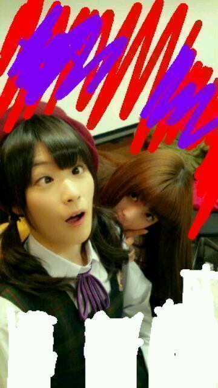
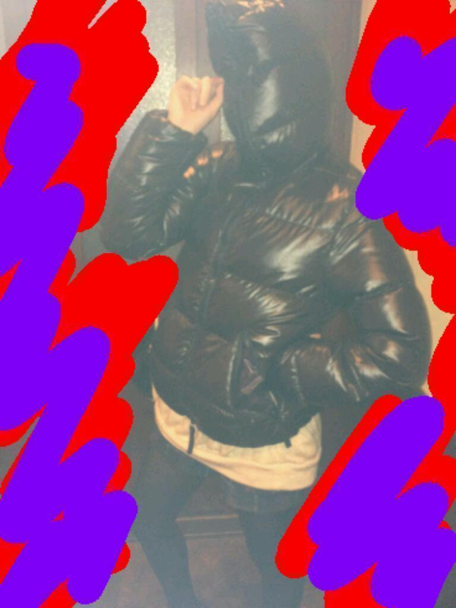

2012/1125Sunエヴァワールドっ(o・・o)
こんにちは、みなさんっ(o・・o)
まちゅむら昨日
エヴァみたよー
Ｑやでなー
わくわくした！
はらはらした！
ネタバレはしやんよ！
あっ！
使徒や！
がぶー

第４６の使徒！
かじゅみ！
高山さんの許可はとってません。
かずみんごめんなさい。
私は、私は、エヴァンゲリオン４６号機のパイロット
まちゅむらさゆりです！

・・・・・・・(笑)
さよなら！
2012/11/25 12:42
コメント(475)
エヴァ見に行ったんだね(*^^*)
いいなぁ～(///ω///)♪
行きたいけどお金がない(T0T)
お小遣い下さいm(__)m(笑)
いいなぁ～(///ω///)♪
行きたいけどお金がない(T0T)
お小遣い下さいm(__)m(笑)
ピアノ弾いてみようかなー
13号機 『覚醒』!!!
46号機は覚醒しやんの？
さゆりんごの写メ可愛い～
エヴァ見たんだ？
俺知ってるけど歌とかキャラぐらいしかわからないな～
エヴァ見たんだ？
俺知ってるけど歌とかキャラぐらいしかわからないな～
お疲れやまです!!
エヴァ見たんかー
いいなぁ・ω・〃
自分も見たいわ(・・;)
使徒…ww
エヴァ…ww
何やってるんすかー笑
それでは…\((。・ω・)/
さゆりんの言いたいことはなんかわかる…
うん（笑）
さゆりん髪の毛下ろすと可愛いなー♡
うん（笑）
さゆりん髪の毛下ろすと可愛いなー♡
やっと観た！？
すごいハラハラドキドキだよね笑
終始アタマの中が？だらけだったけど…
高山さん可愛いです。
早く高山ブログみたいです。
まっちゅんも好きよ！
すごいハラハラドキドキだよね笑
終始アタマの中が？だらけだったけど…
高山さん可愛いです。
早く高山ブログみたいです。
まっちゅんも好きよ！
さゆりん、おもろすぎるよ(^∇^)
笑いすぎて腹筋いたい(>_<)
元気でたわぁーwww
笑いすぎて腹筋いたい(>_<)
元気でたわぁーwww
にゅん(=ﾟωﾟ)ﾉ
こんにちまつむら(^o^)/←無理矢理(笑)
エヴァ見たのかー(￣Д￣)ﾉ
さすがアニメ好きだなあ(*^^*)
俺あんまアニメわからん←
最後なんか凄いことになってるなｗ
ばいばい(=ﾟωﾟ)ﾉ
☆☆☆☆☆☆プーさん☆☆☆☆☆☆
こんにちまつむら(^o^)/←無理矢理(笑)
エヴァ見たのかー(￣Д￣)ﾉ
さすがアニメ好きだなあ(*^^*)
俺あんまアニメわからん←
最後なんか凄いことになってるなｗ
ばいばい(=ﾟωﾟ)ﾉ
☆☆☆☆☆☆プーさん☆☆☆☆☆☆
さゆりんご大大大好きです！
本当に癒されます(T-T)
最近何に対しても無気力な自分にさゆりんごパンチで気合い入れて欲しいです(T-T)
安定の面白さやな♪
お疲れ様です(>_<)
エヴァ全くわかりません（泣）
さゆりん(*^^*)
こんにちは
さゆりん(o・・o)
エヴァンゲリオン
見たんだ(*^^*)
よかったね♪
写真のさゆりん(o・・o)
かわゆす(*^^*)
今日も
キラキラの
さゆりん(o・・o)スマイル
いーっぱい
咲かせてください
まさるん.より
こんにちは
さゆりん(o・・o)
エヴァンゲリオン
見たんだ(*^^*)
よかったね♪
写真のさゆりん(o・・o)
かわゆす(*^^*)
今日も
キラキラの
さゆりん(o・・o)スマイル
いーっぱい
咲かせてください
まさるん.より
こんにちは♪
エヴァ見たんですね(*^^*)
自分は正直１回では理解できなかったからもう１回見ます(笑)
第46の使徒かじゅみはかなり強そうですね(笑)
今日も１日頑張ってください(^-^)v
では、お休みなさい(-.-)Zzz・・・・
いいなー
おれもエヴァみたいわー！
おれもエヴァみたいわー！
楽しそう(o^^o)
私も一緒に遊びたい笑
12月24日の握手会行けるかもよ☆*:.｡. o(≧▽≦)o .｡.:*☆
楽しみ♪───Ｏ（≧∇≦）Ｏ────♪
私も一緒に遊びたい笑
12月24日の握手会行けるかもよ☆*:.｡. o(≧▽≦)o .｡.:*☆
楽しみ♪───Ｏ（≧∇≦）Ｏ────♪
さゆりん、おはよう。
俺も先週Q見たよ。
中々の展開だったね
宇多田ヒカルの歌がよかったね。
46使徒笑った。
かずみさん面白い
俺も先週Q見たよ。
中々の展開だったね
宇多田ヒカルの歌がよかったね。
46使徒笑った。
かずみさん面白い
まっちゅんヤッホー(o・・o)/
Qまだ見てないや
そうやん、見に行けば良かったんか！Σ（￣□￣;）
今日のブログおもろいやん
いつもがおもんないとは思ってないけど←
かずみんの顔(笑)
みんなに最近万理華言い過ぎ言われたw
言い返せんかったwwww
ほなねﾉｼ
Qまだ見てないや
そうやん、見に行けば良かったんか！Σ（￣□￣;）
今日のブログおもろいやん
いつもがおもんないとは思ってないけど←
かずみんの顔(笑)
みんなに最近万理華言い過ぎ言われたw
言い返せんかったwwww
ほなねﾉｼ
エヴァQ観たんですね★
自分も今晩見に行こうか迷ってます
だって握手会前に見てさゆりんとエヴァ話ししたいじゃないですか♪
では、ごきげんよう。
自分も今晩見に行こうか迷ってます
だって握手会前に見てさゆりんとエヴァ話ししたいじゃないですか♪
では、ごきげんよう。
こんにちは、さゆりんさん
これはひどい笑笑笑
それでは
これはひどい笑笑笑
それでは
まっつん、Hello！(^o^)/
３連休の３日目…ウチは、絶賛在宅中(笑)！
おっ！『Ｑ』見てきたんだね！
ウチも、先週見たんだけど、まっつんは、内容とか、ちゃんと分かった？( ´艸｀)
そのあたり、色々と語り合いたいところなんだけどねー(笑)。
ちなみに、ウチは、アニメ版との違いに、まだ戸惑ってるところもありつつで…(^^;
やっぱり、早めに２回目見に行こっと(￣ー+￣)
それにしても、まっつんの中では、もう46号機なんだ…
顔が分からないのが残念なんだけど、次回作でちゃんとお披露目してくれるんだよね？←
待ってるからねー(笑)！
あ、そういや、かじゅみは、ウチが退治しときます！←
取り込まれちゃうかもしれないけど…( ´艸｀)
３連休の３日目…ウチは、絶賛在宅中(笑)！
おっ！『Ｑ』見てきたんだね！
ウチも、先週見たんだけど、まっつんは、内容とか、ちゃんと分かった？( ´艸｀)
そのあたり、色々と語り合いたいところなんだけどねー(笑)。
ちなみに、ウチは、アニメ版との違いに、まだ戸惑ってるところもありつつで…(^^;
やっぱり、早めに２回目見に行こっと(￣ー+￣)
それにしても、まっつんの中では、もう46号機なんだ…
顔が分からないのが残念なんだけど、次回作でちゃんとお披露目してくれるんだよね？←
待ってるからねー(笑)！
あ、そういや、かじゅみは、ウチが退治しときます！←
取り込まれちゃうかもしれないけど…( ´艸｀)
まっちゅんさっき書き忘れた汗
１枚目の写真可愛すぎ(///∇///)
やっぱ髪型おろす方が好きやわ
来月の個別もおろしてくだせぇ(￣▽￣)b
１枚目の写真可愛すぎ(///∇///)
やっぱ髪型おろす方が好きやわ
来月の個別もおろしてくだせぇ(￣▽￣)b
おつかれ
まっつーん
ぼくねダンボール戦機すきなんよ
ほんでな
つかってる機体な
らいおんみたいなやつなんやけどな
色設定でな乃木坂カラーにしとんよ
いいやつやろ
ほめてくれ
まつむらさん
まっつんみたいにアニメすきやで
まだ握手いったことないけど
高校生になったら
ぜったいいくけんな
そんときは
アニメの話いっぱいしてな
さゆりんご
なんかわからんけど
せっかちなカタツムリでまっつんのとこ
何回もきいてしまうよ
やけん
そっからすすまんねん
こんど
まりかちゃんさまとの
写真」おねがいおねがいおねがいいたします
それではな
まっつーん
ぼくねダンボール戦機すきなんよ
ほんでな
つかってる機体な
らいおんみたいなやつなんやけどな
色設定でな乃木坂カラーにしとんよ
いいやつやろ
ほめてくれ
まつむらさん
まっつんみたいにアニメすきやで
まだ握手いったことないけど
高校生になったら
ぜったいいくけんな
そんときは
アニメの話いっぱいしてな
さゆりんご
なんかわからんけど
せっかちなカタツムリでまっつんのとこ
何回もきいてしまうよ
やけん
そっからすすまんねん
こんど
まりかちゃんさまとの
写真」おねがいおねがいおねがいいたします
それではな
お疲れ！
エヴァ最高ー！
アスカしかー！笑
ではでは。
今日も1日頑張りまいやん！！
エヴァ最高ー！
アスカしかー！笑
ではでは。
今日も1日頑張りまいやん！！
オッツー（≧∨≦）b
もっちゃんです（＾∇＾）
僕もエヴァQ見たよ
まっちゅん照れてない？
エヴァ好きなんだね(￣▽￣;)
凄く伝わるわ～(笑)
かずみん凄い顔！！
最高ですねへ(〃∀〃)ノ
エヴァ好きなんだね(￣▽￣;)
凄く伝わるわ～(笑)
かずみん凄い顔！！
最高ですねへ(〃∀〃)ノ
俺もｑみたよ～
全然TV版とストーリー違ったよね～
パターン「青」!
かじゅみです！！！！！
さゆりんこんにちは(*^^*)
エヴァ見たのか～
自分まだ見れてない～(>_<)
はやく見なきゃ
第46の使徒かじゅみｗｗ
かずみんが使徒になっちゃったｗ
てか許可取ってないのか～
でもかずみんなら許してくらる
46号機のパイロットｗｗ
この写真どうなってるの～ｗ
あ～おもしろかった
またコメントするね♪
さゆりーん！(#^.^#)
エヴァみたい！（≧∇≦）！
絶 絶対みるねp(^_^)q
さゆりんサイコー(^_^)/
エヴｧ見たんやな♪
おれはまだ見てないんよ～(T-T)
でも絶対映画館で見るっち
決めとんけん見るよ～(^_^)/
第46使徒かじゅみ
強そーやな(笑)
パイロットの
まちゅむらさん
頑張って倒して(//∇//)
さゆりんのブログサイコー(^_^)/
爆笑しました♪
エヴｧ見たんやな♪
おれはまだ見てないんよ～(T-T)
でも絶対映画館で見るっち
決めとんけん見るよ～(^_^)/
第46使徒かじゅみ
強そーやな(笑)
パイロットの
まちゅむらさん
頑張って倒して(//∇//)
さゆりんのブログサイコー(^_^)/
爆笑しました♪
さゆりんお久しぶりんご
さゆりんは本当アニメ好きだよねー(^-^)
自分ｴｳﾞｱはみないんよー(-_-)
だからさゆりんと話が会わなくなってしまうー
でもでも1月会いにいくけんね
さゆりんは本当アニメ好きだよねー(^-^)
自分ｴｳﾞｱはみないんよー(-_-)
だからさゆりんと話が会わなくなってしまうー
でもでも1月会いにいくけんね
かずみさんwwww
そしてさゆりんまでwwww
楽しそうやね〜
でもエヴァほとんど知らない←
もうねあれね。
でわでわ今日も頑張って！
さかちょん
そしてさゆりんまでwwww
楽しそうやね〜
でもエヴァほとんど知らない←
もうねあれね。
でわでわ今日も頑張って！
さかちょん
こんにちは!!
うん、いつも以上にテンション高いとみた。
かじゅみ(笑)
ブログに載せちゃいけない顔じゃない(笑)
うん、いつも以上にテンション高いとみた。
かじゅみ(笑)
ブログに載せちゃいけない顔じゃない(笑)
エヴァいいな(ノ_・,)
俺もみたい！！
悪の教典もみたい！！
ネタバレはアカンよ(*^^*)
次のエヴァの映画はかじゅみvsまちゅむらさゆりかな(^^)？笑
顔隠れてるからさゆりんに見えない^^;
んじゃバイト戻ります(o・・o)/~
俺もみたい！！
悪の教典もみたい！！
ネタバレはアカンよ(*^^*)
次のエヴァの映画はかじゅみvsまちゅむらさゆりかな(^^)？笑
顔隠れてるからさゆりんに見えない^^;
んじゃバイト戻ります(o・・o)/~
さゆりんごcos明日香！
エヴァ好きなの初めて知りましたぁ
まだまださゆりんのこと
勉強不足やわぁ
アスカよりレイちゃんより
まちゅむらパイロットが可愛いよー
第46の使徒かじゅみの写メはアウトでしょ(笑)
46号機のパイロットには突っ込みません←
映画見に行こーかな
46号機のパイロットには突っ込みません←
映画見に行こーかな
こんにちは。
初コメです。
乃木坂好きですが、エヴァも好きなんで。
写メ最初誰かと思ったらかずみんでしたかぁ
エヴァンゲリオン４６号機パイロットまちゅむらさゆりさん、これからも使徒と戦っちゃって下され。
ちなみにいつもはななみんブログにいます。
初コメです。
乃木坂好きですが、エヴァも好きなんで。
写メ最初誰かと思ったらかずみんでしたかぁ
エヴァンゲリオン４６号機パイロットまちゅむらさゆりさん、これからも使徒と戦っちゃって下され。
ちなみにいつもはななみんブログにいます。
流石さゆりん
早速エヴァ観に行ったんだね～
映画で興奮した後真似しちゃう気持ち分かる
テレビでやってたエヴァ観て俺もハマっちゃった
Q観に行きたいな～
早速エヴァ観に行ったんだね～
映画で興奮した後真似しちゃう気持ち分かる
テレビでやってたエヴァ観て俺もハマっちゃった
Q観に行きたいな～
こんにちわ。さゆりん。(^_^ゞ
こらー！まつむらー！ネタバレー！
つーかめちゃめちゃわくわくしちゃうじゃないか。
暴走してるし、はしゃぎ過ぎだし、暴走してるし。
ん？エヴァって何歳の子供が乗れるんだっけ？
あらーさゆりんちょうどじゃん。
笑った笑った、
ジェットコースターみたく読んで、笑ったよ。
このブログは、「46thインパクト」だな。
さよなら・・・逃げたな！？
ほなね
こらー！まつむらー！ネタバレー！
つーかめちゃめちゃわくわくしちゃうじゃないか。
暴走してるし、はしゃぎ過ぎだし、暴走してるし。
ん？エヴァって何歳の子供が乗れるんだっけ？
あらーさゆりんちょうどじゃん。
笑った笑った、
ジェットコースターみたく読んで、笑ったよ。
このブログは、「46thインパクト」だな。
さよなら・・・逃げたな！？
ほなね
エヴァの映画見に行ったんだ良いな
僕も明日見に行こ
僕も明日見に行こ
かずみん。（笑）
でも可愛い！
でわ！
でも可愛い！
でわ！
まっつんからさゆりんごへ
おぉ～かずみんがぁぁあ(；´∀｀)
エヴァQまだ見とらんし…
寒いから風邪引かないようにね。
ではでは…
おぉ～かずみんがぁぁあ(；´∀｀)
エヴァQまだ見とらんし…
寒いから風邪引かないようにね。
ではでは…
え！
俺も昨日エヴァ見た笑
休みがあって良かったな！
自分の時間が持てて少しは気持ちや体力回復出来たかな？
ザラエル推しの社長でしたｗ
ＨＭ
俺も昨日エヴァ見た笑
休みがあって良かったな！
自分の時間が持てて少しは気持ちや体力回復出来たかな？
ザラエル推しの社長でしたｗ
ＨＭ
お疲れさま!
エヴァの下り笑
俺もQ見に行こうかなと思ってる!
ワクワク、ハラハラしたいんよー!
明日も頑張ってね＼(*⌒0⌒)ｂ♪
まっちゅん、、、
テンション高い笑
そして、一実さん、、、ｗｗｗ
テンション高い笑
そして、一実さん、、、ｗｗｗ
ごきげんようマイロードさゆりんさん(^O^)
第４６の使徒と、エヴァ４６号機の対決、どっちが勝ったんやろうね？
やっぱり、勝った方が相手を喰ってしまうんかな～(≧∇≦)
いろいろ評価の分かれるエヴァＱやけど、さゆりんさんは気に入りましたか？
ほな、また(*^o^*)
第４６の使徒と、エヴァ４６号機の対決、どっちが勝ったんやろうね？
やっぱり、勝った方が相手を喰ってしまうんかな～(≧∇≦)
いろいろ評価の分かれるエヴァＱやけど、さゆりんさんは気に入りましたか？
ほな、また(*^o^*)
松村さんいつもお疲れ様です(^-^)/
最近エヴァを友達のDVDで見てます！
松村さんの影響じゃないよ（笑）
すいません。少しあります（笑）
今は十五話ぐらいまで見ました！
あとこの間松村さんのブログにエヴァのことをエバって書いて今思うと凄く恥ずかしいです（笑）
さぁ今日も頑張ってエヴァ！見まーす笑
これからも頑張って行きましょう
最近エヴァを友達のDVDで見てます！
松村さんの影響じゃないよ（笑）
すいません。少しあります（笑）
今は十五話ぐらいまで見ました！
あとこの間松村さんのブログにエヴァのことをエバって書いて今思うと凄く恥ずかしいです（笑）
さぁ今日も頑張ってエヴァ！見まーす笑
これからも頑張って行きましょう
おはこんばんちわo(^o^)o
おいらは水曜日に観てきました！
平日にも関わらず満員でした。
内容の方はネタバレするので詳しくは書かないけども、最初の10分くらいは時系列が把握できなくて往生しましたよ(^_^;)
しかし、エンドロール終わりの予告編を観ないで帰るにわかファンが何人か居たのを見逃さなかったね(^_^;)
では、ちょっとだけ予告から…2号機と8号機があんな事になっちゃうなんて…(ﾟoﾟ;)
ではではm(_ _)m
おいらは水曜日に観てきました！
平日にも関わらず満員でした。
内容の方はネタバレするので詳しくは書かないけども、最初の10分くらいは時系列が把握できなくて往生しましたよ(^_^;)
しかし、エンドロール終わりの予告編を観ないで帰るにわかファンが何人か居たのを見逃さなかったね(^_^;)
では、ちょっとだけ予告から…2号機と8号機があんな事になっちゃうなんて…(ﾟoﾟ;)
ではではm(_ _)m
色々ツッコミ所が多すぎて、笑ったww
とりあえず俺もエヴァ見に行ってきます( ´∀｀)
とりあえず俺もエヴァ見に行ってきます( ´∀｀)


さゆりん
なにしとーん´。>u<。｀ 笑